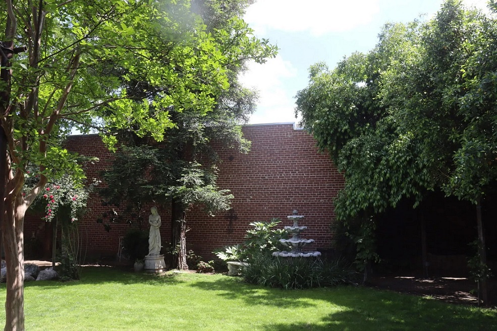

Watson’s Organic Market & Cafe offers healthy food and delicious dishes.
Store
Our organic market carries a diverse selection of products made from all-natural ingredients. We sell groceries, health supplements, and body care items.
Market Hours
Monday—Friday
9 AM-6 PM
Saturday
9 AM-4 PM
Sunday
11 AM-4 PM

Cafe
At our cafe, casual eats are prepared fresh daily from local, farm-to-table ingredients. We have vegetarian and vegan offerings, and 85-90% of our ingredients are organic.
Menu Categories
Food
- Light Bites
- Burgers
- Wraps
- Sandwiches
- Salads & Bowls
Drinks
- Hot Drinks
- Iced Drinks
- Smoothies
- Cold-Pressed Juices
Cafe Hours
Monday—Saturday
9 AM-4 PM
Sunday
11 AM-4 PM

Garden
Come visit our secret garden tucked away in the heart of downtown Visalia. Our garden is open during normal business hours, and can be booked for private events.
